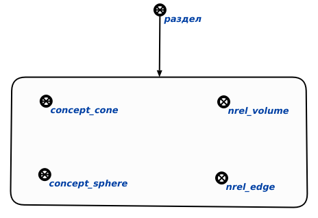
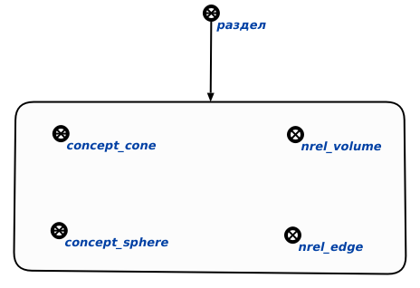

Команда поиска sc-элементов, имеющих системный идентификатор, но не имеющих ни одного основного предназначена для поиска sc-элементов, имеющих системный идентификатор, но не имеющих ни одного основного. Единственным аргументом запроса является раздел базы знаний, в рамках которого анализируются sc-элементы на предмет наличия у них системного идентификатора и, как минимум, одного основного идентификатора. Результатом выполнения команды является структура, содержащая sc-элементы без единого основного идентификатора. Пример выполнения команды представлен ниже (слева - исходный раздел базы, справа - сформированная структура):
 
